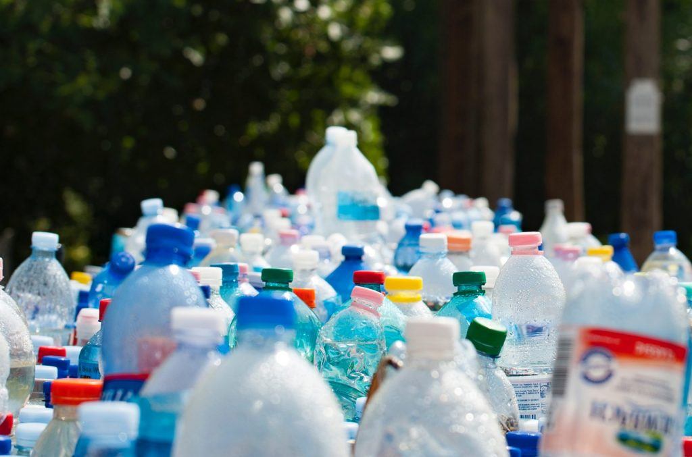
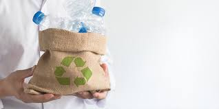
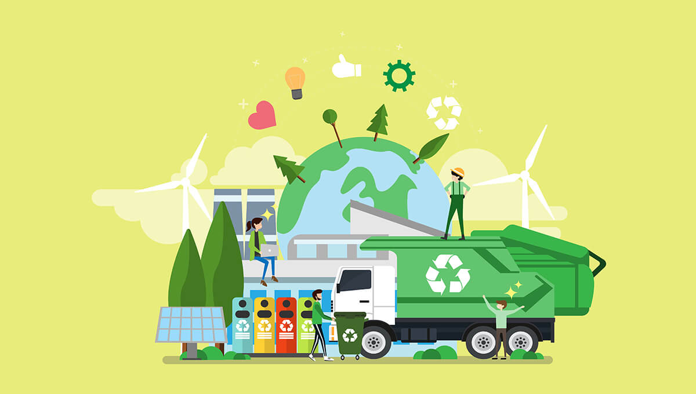

.jpg)
.jpg)
.jpg)
.jpg)

.jpg)
.jpg)
.jpg)


Ochrona otaczającego nas świata jest obowiązkiem każdego człowieka. Istnieje wiele form ochrony środowiska - na przykład przedsiębiorstwa starają się ograniczyć nadmierne korzystanie ze złóż czy emisję spalin. Najpowszechniejszą formą dbania o środowisko stosowaną przez osoby prywatne jest segregacja śmieci. Posegregowane śmieci przetwarzane są w procesie recyklingu i ponownie wykorzystywane. Sprawdź, co to jest recykling! Recykling jest powtórnym wykorzystywaniem odpadów w celu wytworzenia nowego produktu. Jest to jedna z form ochrony środowiska, której celem jest zmniejszenie nadmiernego eksploatowania złóż naturalnych oraz zmniejszenie ilości odpadów. Jej podstawową zasadą jest maksymalne wykorzystanie dostępnych odpadów przy jak najmniejszym nakładzie energetycznym i surowcowym.
Recykling i związane z nim przepisy prawne oraz akcje społeczne mają na celu zmobilizowanie producentów i handlowców do odpowiedniej gospodarki odpadami, a konsumentów do zmiany nawyków na bardziej odpowiedzialne. Poza obowiązującymi przepisami bardzo ważnym aspektem jest zrozumienie istoty recyklingu i wyrobienie nawyków, które sprawią, że recykling będzie coraz bardziej powszechny i efektywny, dzięki czemu ograniczy się ilość śmieci, odzyska materiały i surowce oraz zapobiegnie dewastacji środowiska naturalnego. Oto kilka najważniejszych przykładów korzyści z recyklingu: bezpłatne pozbycie się odpadów z gospodarstw domowych, redukcja ilości odpadów na wysypiskach i zmniejszenie kosztów ich utrzymania przez gminy, mniejsze obciążenie środowiska naturalnego, ograniczenie ilości odpadów niebezpiecznych na wysypiskach, obniżenie zużycia surowców naturalnych, ponowne wykorzystanie materiałów i surowców lub ich przetworzenie na nowe, zmniejszenie zużycia energii i redukcja wydatków.
Największą część pozyskiwanych do recyklingu odpadów stanowią śmieci z gospodarstw domowych. Mieszkańcy w celu uzyskania niższej ceny za wywóz nieczystości mogą się zobowiązać do ich segregacji. Na osiedlach ustawiane są oznakowane odpowiednimi kolorami kontenery, a w przypadku domków jednorodzinnych często zdarzają się oznakowane worki, które w odpowiednim terminie wystawiane są przed posesję. Odpady dzielone są na 4 podstawowe grupy: papier - kontener lub worki w kolorze niebieskim, plastik - kontener lub worki w kolorze żółtym, szkło - kontener lub worki w kolorze zielonym (szkło kolorowe) lub biały (szkło białe), metale - kontener lub worki w kolorze czerwonym lub pomarańczowym.
Wrzucanie śmieci do odpowiedniego pojemnika kosztuje minimum wysiłku. Tymczasem ponowne wykorzystanie materiałów w recyklingu wpływa na mniejsze zużycie surowców naturalnych, które są wyczerpywalne.
Żółty pojemnik – metale i tworzywa sztuczne.
Niebieski pojemnik – papier.
Zielony pojemnik – szkło.
Brązowy pojemnik – bio.
Czarny lub szary pojemnik – odpady zmieszane.